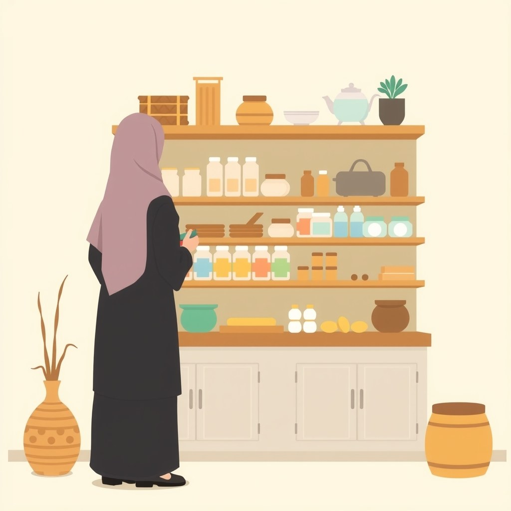

Banyak pemula merasa minder ketika ingin membangun usaha karena tidak memiliki modal melimpah, tidak punya investor kakap, dan harus berhadapan dengan pemain besar yang modalnya puluhan kali lipat. Di tengah persaingan industri yang ketat, kemunculan kompetitor berkantong tebal sering kali membuat niat calon pengusaha surut sebelum sempat mengeksekusi ide bisnisnya.
Namun jika kita menengok kembali sejarah awal industri internet, situasi ketimpangan modal ini pernah dialami langsung oleh salah satu perusahaan terbesar di dunia saat ini. Pada akhir tahun 1990-an, gagasan membangun platform e-commerce di negara berkembang seperti China dianggap oleh banyak pakar sebagai langkah konyol yang tidak memiliki prospek masa depan.
Kisah sukses Jack Ma dan berdirinya Alibaba memberikan cetak biru nyata bagaimana sebuah tim dengan sumber daya terbatas bisa bertahan, tumbuh, dan memenangkan pasar tanpa harus meniru mentah-mentah strategi pemain besar. Kuncinya bukan pada seberapa besar modal yang dibakar di awal, melainkan pada ketajaman melihat kelompok konsumen yang luput dari perhatian para raksasa.
Mulanya dari Mana
Pada awal tahun 1999, kondisi infrastruktur digital di China belum semaju sekarang. Berdasarkan catatan dalam buku Alibaba: The House That Jack Built karya Duncan Clark (hal. 115), hanya ada sekitar dua juta pengguna internet di seluruh negara China saat Alibaba pertama kali didirikan. Perangkat komputer pribadi (PC) pada tahun 1999 dibanderol dengan harga yang sangat tinggi, yaitu sekitar $1.500 per unit, nilai yang sangat mahal bagi kebanyakan warga biasa maupun pemilik pabrik skala rumahan kala itu.
Kala itu, ribuan produsen barang skala kecil dan menengah di daerah seperti Zhejiang dan Hangzhou memiliki kapasitas produksi yang melimpah. Sayangnya, mereka tidak memiliki akses langsung ke pembeli luar negeri. Pameran dagang internasional seperti Canton Fair sangat mahal dan didominasi oleh perusahaan manufaktur besar milik negara. Usaha kecil tidak memiliki panggung untuk mengenalkan produk mereka ke pasar global.
Di ruang tamu apartemen Lakeside Gardens di Hangzhou, Jack Ma mengumpulkan 18 pendiri dan pendukung awal untuk menyampaikan mimpinya. Di depan rekan-rekannya, Jack Ma melontarkan pertanyaan mendasar untuk membakar semangat tim yang sedang berkumpul di ruangan sempit tersebut:
"In the next five to ten years, what will Alibaba become?"
Pertanyaan itu bukan sekadar basa-basi motivasi. Jack Ma menyadari bahwa tantangan terbesar mereka bukan hanya membuat perangkat lunak, melainkan mengedukasi masyarakat dan pemilik pabrik kecil yang belum terbiasa dengan transaksi online. Banyak pemilik usaha lokal saat itu bahkan belum pernah menyentuh papan ketik komputer atau mengirim surat elektronik.
Untungnya, iklim regulasi publik mulai membaik ketika pemerintah setempat mulai memangkas biaya akses internet bulanan dari $70 pada tahun 1997 menjadi hanya $9 pada akhir tahun 1999, serta menghapus biaya instalasi telepon pada bulan Maret 1999 (hal. 115). Momentum perbaikan infrastruktur inilah yang dimanfaatkan tim awal Alibaba untuk mulai melangkah dan menawarkan direktori pemasok online bagi industri kecil.
Titik Baliknya: Strategi Udang vs Paus

Pertanyaan terbesar yang dihadapi Jack Ma saat memulai adalah: siapa target konsumen yang harus digarap lebih dulu? Perusahaan-perusahaan situs B2B buatan Amerika Serikat saat itu sibuk mengejar korporasi raksasa dengan nilai transaksi fantastis. Mereka meyakini bahwa transaksi bernilai jutaan dolar dari perusahaan multinasional adalah satu-satunya cara membuat platform e-commerce mencetak keuntungan.
Namun, Jack Ma yang terinspirasi dari filosofi daya tahan karakter film Forrest Gump memiliki cara pandang yang sama sekali berbeda. Ia melihat bahwa mengejar korporasi besar membutuhkan proses negosiasi yang berbelit-belit, integrasi sistem teknologi yang rumit, dan biaya akuisisi konsumen yang sangat mencekik bagi startup bermodal tipis.
Jack Ma merumuskan perbedaan inti strateginya dalam kalimat tegas yang tercatat di buku karangan Duncan Clark (hal. 114):
"American B2B sites are whales. But 85 percent of the fish in the sea are shrimp-sized."
Jack Ma menyadari bahwa perusahaan-perusahaan besar atau "paus" memiliki departemen teknologi sendiri, prosedur pembelian yang rumit, dan daya tawar tinggi yang membuat keuntungan penyedia platform menjadi tipis. Sebaliknya, jutaan usaha kecil dan menengah atau "udang" di China sangat membutuhkan akses pasar luar negeri untuk menjual barang produksi mereka, tetapi tidak ada satu pun perusahaan teknologi besar yang sudi melayani mereka karena nilai transaksi per unitnya dianggap terlalu kecil.
Inilah celah pasar yang membikin Jack Ma yakin untuk melangkah. Daripada membuang modal untuk mengetuk pintu korporasi besar yang enggan berpindah, Alibaba memutuskan untuk memfokuskan seluruh daya dukung platformnya untuk membantu usaha kecil menjangkau pembeli internasional melalui direktori online yang simpel dan mudah digunakan.
Strategi membidik pasar udang ini memberikan Alibaba volume pasar yang sangat masif. Ketika para pesaing global sibuk saling sikut memperebutkan 15 persen pasar perusahaan besar, Alibaba bergerak leluasa menguasai 85 persen populasi usaha kecil yang selama ini diabaikan dan haus akan akses penjualan.
Apa yang Terjadi Setelahnya
Keputusan membidik usaha kecil harus diuji dalam kenyataan yang keras. Pada saat Jack Ma merintis Alibaba dari apartemen, portal-portal internet raksasa di China sedang disiram dana melimpah oleh pemodal ventura global. Sebagai perbandingan, Sina berhasil mengumpulkan pendanaan modal ventura sebesar $25 juta pada Mei 1999 (hal. 116), sementara Sohu telah mengantongi pendanaan sebesar $10 juta pada tahun 1998 (hal. 117).
Menghadapi pesaing yang memiliki uang berlimpah untuk memasang iklan papan reklame dan merekrut talenta lulusan luar negeri dengan gaji tinggi, Jack Ma menekankan pentingnya membangun budaya kerja dengan komitmen tinggi. Keterbatasan modal finansial ditutupi dengan kecepatan eksekusi dan dedikasi tim yang tidak bisa ditandingi oleh karyawan korporat biasa.
Kepada 18 pendiri awal, Jack Ma menetapkan standar kerja yang ketat demi mengejar ketertinggalan teknologi (hal. 117):
"If we go to work at 8 A.M. and get off work at 5 P.M. , this is not a high-tech company"
Untuk menyatukan semangat tim di tengah keterbatasan gaji dan fasilitas apartemen yang panas serta penuh sesak, Jack Ma membangun ikatan emosional yang unik. Setiap anggota tim diberikan nama julukan yang diambil dari tokoh-tokoh pendekar novel wuxia populer karya Jin Yong. Langkah ini berhasil menciptakan atmosfer kesetaraan, kerendahan hati, dan persaudaraan, di mana setiap orang merasa sedang berjuang bersama demi misi besar membela pedagang kecil.
Jack Ma bahkan menetapkan target yang sangat berani saat itu: mengantarkan Alibaba melantai di bursa saham (IPO) dalam tenggat waktu tiga tahun. Meskipun kedengarannya muluk bagi perusahaan yang beroperasi dari ruang tamu, kejelasan visi ini memberikan arah perjuangan yang konkret bagi seluruh anggota tim.
Ketika pesaing raksasa menghamburkan uang jutaan dolar untuk promosi besar-besaran yang kurang efektif, Alibaba memilih memfokuskan sumber daya untuk melatih langsung para pemilik usaha kecil cara menggunakan internet. Fokus pada pelayanan usaha kecil ditambah daya tahan tim yang luar biasa akhirnya terbukti menjadi fondasi kokoh yang melambungkan Alibaba menjadi raksasa e-commerce global.
Pola yang Bisa Kamu Tiru
Kisah sukses Jack Ma bukan sekadar cerita masa lalu tentang raksasa teknologi abad ke-21. Bagi kita yang sedang merintis usaha modal pas-pasan, baik di bidang jualan online, jasa digital, maupun pembuatan konten, ada tiga pola berulang yang dapat dipelajari dan diterapkan secara langsung:
Bidik Celah Pasar yang Diabaikan Pemain Besar
Pemain besar memiliki struktur biaya operasional yang tinggi, sehingga mereka hanya mau melayani konsumen atau pembeli dengan daya beli besar. Ini adalah peluang emas bagimu. Temukan kelompok konsumen atau pedagang kecil yang membutuhkan solusi sederhana namun diabaikan oleh pemain utama karena nilai transaksinya dianggap terlampau kecil.
Ganti Keterbatasan Modal dengan Kecepatan Eksekusi
Jika kamu tidak punya anggaran pemasaran sebesar kompetitor, keunggulan utamamu terletak pada fleksibilitas, kedekatan dengan pelanggan, dan kecepatan pelayanan. Membangun kekompakan tim kecil yang memiliki kesamaan visi dan empati mendalam pada masalah konsumen jauh lebih berharga daripada memiliki anggaran iklan besar tetapi bekerja tanpa pemahaman lapangan.
Gunakan Visi Jangka Panjang sebagai Kompas
Ketika merintis bisnis dari nol, hasil finansial pada bulan-bulan pertama sering kali belum terlihat manis. Memiliki patokan target dan komitmen jangka panjang seperti yang dilakukan Jack Ma membantu menjaga fokus seluruh anggota tim agar tidak mudah berpindah arah atau menyerah saat menjumpai hambatan awal di perjalanan.
Biar Jujur: Yang Tidak Bisa Ditiru
Sangat penting untuk melihat perjalanan ini secara objektif tanpa terjebak glorifikasi mentah atau dongeng manis kesuksesan instan. Jack Ma tidak memulai Alibaba benar-benar dari angka nol tanpa pengetahuan atau pengalaman sama sekali. Sebelum mendirikan Alibaba pada tahun 1999, ia telah memiliki pengalaman berharga membangun usaha internet terdahulu bernama China Pages pada tahun 1995, yang memberikannya pemahaman mendalam tentang lanskap digital, kegagalan operasional, dan jaringan relasi bisnis.
Selain itu, langkah awal Alibaba sangat terbantu oleh momen historis kebijakan pemerintah China yang secara agresif memotong tarif akses internet serta menghapus biaya instalasi telepon pada tahun 1999. Tanpa adanya kebijakan publik yang mendorong ledakan jumlah pengguna internet tersebut, serta bergabungnya China ke Organisasi Perdagangan Dunia (WTO) beberapa tahun setelahnya, strategi membidik pasar ekspor usaha kecil tentu membutuhkan waktu yang jauh lebih lama untuk memunculkan hasil manis.
Melihat konteks historis ini mengingatkan kita bahwa faktor keberuntungan, momentum zaman, dan jaringan awal memegang peranan penting dalam setiap panggung kesuksesan bisnis. Kita tidak bisa meniru mentah-mentah kondisi eksternal tahun 1999, namun kita bisa mengadaptasi cara berpikir Jack Ma dalam membaca arah pergerakan zaman dan kebutuhan pasar yang belum terlayani.
Pada akhirnya, strategi bisnis terbaik bukan tentang seberapa besar modal yang kamu pegang hari ini, melainkan seberapa jeli kamu melihat masalah nyata yang dihadapi orang-orang di sekitarmu. Seperti yang dibuktikan oleh perjalanan awal Alibaba, keberanian melayani pasar kecil yang terlupakan sering kali menjadi pintu masuk menuju pencapaian yang jauh lebih besar.
Langkah pertama yang bisa kamu kerjakan hari ini sederhana: amati ceruk pasar di sekitarmu, identifikasi satu masalah spesifik yang dialami pengguna usaha kecil atau pembeli individual, dan buat solusi sederhana yang langsung menyelesaikan masalah tersebut tanpa perlu menunggu sistem yang sempurna. Untuk melengkapi pemahamanmu tentang manajemen keuangan usaha sejak dini, kamu juga bisa membaca panduan cara memisahkan uang pribadi dan usaha kecil agar fondasi bisnismu tetap sehat sejak hari pertama, serta menjelajahi katalog panduan bisnis BiB untuk strategi pengembangan usaha lainnya.
Sumber
- Alibaba: The House That Jack Built — Duncan Clark (HarperCollins) · Buku Bab 5, hal. 114-117